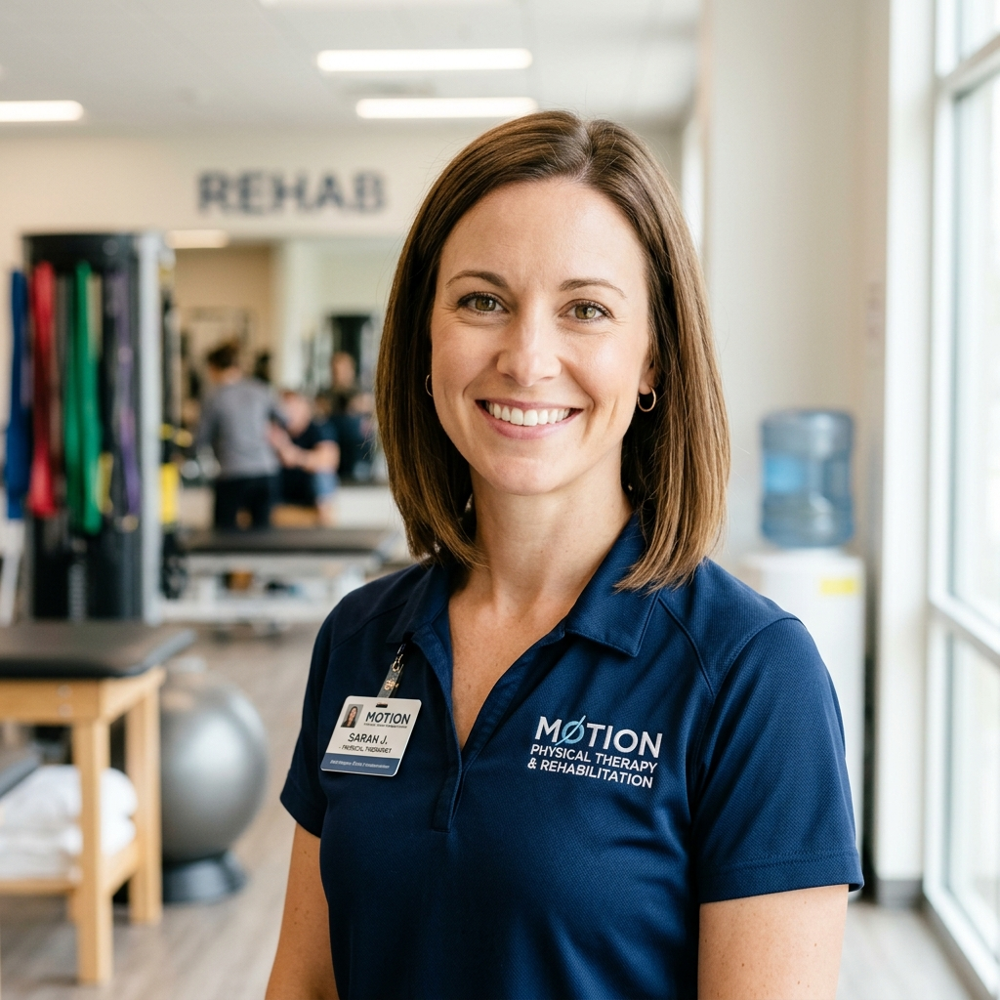

Evelyn Vance, RN, MSN
Founder & Clinical DirectorFormer Chief Nurse Executive with 18+ years leading critical care, geriatric transitions, and home healthcare quality assurance programs.
Founded in 2014 by acute care nursing leaders and geriatric clinicians, CareWell delivers hospital-grade recovery and compassionate home support. We empower individuals to recover safely, maintain independence, and thrive where they are happiest—at home.
Founded by registered nurses who saw families struggling with complex hospital discharges, CareWell was designed to deliver uninterrupted clinical excellence directly at the bedside.
Over the past ten years, CareWell has grown from a specialized post-operative nursing registry into a fully accredited regional home nursing network. We partner directly with leading regional hospital networks, orthopedic surgical practices, and primary care physicians to ensure complete continuity of care.
Unlike fragmented non-medical agencies, every CareWell care plan is developed, supervised, and reviewed by licensed Registered Nurses. Whether managing intricate multi-drug regimens, sterile surgical wound dressings, or progressive memory challenges, our clinicians bring clinical rigor, sterile protocols, and deep human empathy into every home.
Our supervisory team brings together over 50 years of collective acute hospital, critical care, and geriatric rehabilitation experience.
Former Chief Nurse Executive with 18+ years leading critical care, geriatric transitions, and home healthcare quality assurance programs.
Certified in advanced acute wound care, central line management, and sterile post-operative recovery protocols for complex hospital discharges.

Doctor of Physical Therapy specializing in geriatric balance restoration, post-joint replacement protocols, and in-home fall prevention audits.
Oversees cardiac, diabetic, and pulmonary home management programs with daily telemetry and physician coordination.
We accept fewer than 4% of healthcare applicants. Every nurse and aide entering your home has completed the region's most stringent credentialing process.
Direct real-time verification with the State Board of Nursing for active, unencumbered RN/LPN licenses and certifications.
Comprehensive Level 2 biometric fingerprint criminal history screening across national, state, and local databases.
Rigorous hands-on skill simulations assessing sterile wound management, vitals interpretation, and emergency escalation.
Structured scenario-based interviews conducted by our Clinical Director to assess empathy, bedside manner, and situational judgment.
Mandatory American Heart Association BLS/CPR certifications, annual health screenings, and hospital-grade infection control protocols.
Unannounced supervisory in-home audits by Senior RN managers to ensure complete fidelity to clinical standards and patient satisfaction.
Clinical excellence guarantees safety; our shared values make that care profoundly personal.
We listen attentively, protect personal autonomy, and design tailored care routines that preserve our clients' self-worth and routines.
Doctor-aligned care pathways, real-time vital tracking, and sterile protocols ensure consistently predictable, safe recovery outcomes.
Digital shift notes, direct coordinator messaging, and timely physician reports give family members absolute clarity and confidence.
Our clinical team provides reliable bedside care 365 days a year while remaining accessible, supportive, and community-centered.